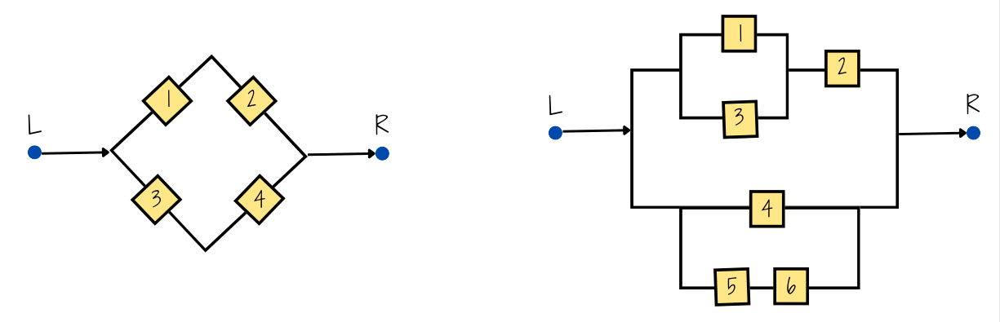

Suponga que el conjunto universal consta de los números enteros del 1 al 10.
Sea
\(A=\{2,3,4\}\), \(B=\{3,4,5\}\), \(C=\{5,6,7\}\)
Determine los elementos de los siguientes conjuntos:
Suponga que el conjunto \(U\) está
dado por \(U = \{ x | 0 \leq x \leq 2
\}\) . Sean los conjuntos A y B
definidos como:
\[A=\{ x | 1/2 \leq x \leq
1\}\]
\[B = \{x|1/4 \leq x \leq 3/4 \}\]
Describa los siguientes conjuntos:
Un cargamento de 1500 lavadoras contiene 400 defectuosas y 1100 no defectuosas. Se eligen al azar doscientas lavadoras (sin sustitución) y se clasifican.
Diez fichas numeradas del 1 al 10 se mezclan en una urna. Se sacan de
la urna dos fichas numeradas (X,Y) una y otra a la vez sin
sustitución. ¿Cuál es la probabilidad de que X+Y=10 ?
Un lote consta de 10 artículos buenos, 4 con pequeños defectos y 2 con defectos graves. Se elige un artículo al azar. Encontrar la probabilidad de que :
Un mecanismo puede ponerse en cuatro posiciones digamos
a, b, c y d . Hay 8
de tales mecanismos en un sistema.
a y b con la misma frecuencia?Entre los números \(1,2,3 .... 50\)
se escoge un número al azar. ¿Cuál es la probabilidad de que el número
escogido sea divisible por 6 o por 8?
La urna 1 contiene x bolas blancas e y
bolas rojas. La urna 2 contiene z bolas blancas y
v bolas rojas. Se escoge una bola al azar de la urna 1 y se
pone en la urna 2. Entonces se escoge una bola al azar de la urna 2.
¿Cuál es la probabilidad de que esta bola sea blanca?
En las siguientes figuras (a) y (b) se supone que la probabilidad de
que cada interruptor este cerrado es p y que cada
interruptor se abre o se cierra independientemente de cualquier otro.
Encontrar en cada caso la probabilidad de la corriente pase de
Izquierda a Derecha

Ejercicios tomados de Meyer( 1986)
Los contaminantes más comunes de las aguas son de origen orgánico. Puesto que la mayor parte de los materiales orgánicos se descompone por acción de bacterias que requieren oxígeno, un exceso de materia orgánica puede significar una disminución en la cantidad de oxígeno disponible. Ello afecta eventualmente a otros organismos presentes en el agua. La demanda de oxígeno por parte de una bacteria se llama demanda biológica de oxígeno (DBO). Un estudio de las corrientes acuáticas que circulan en las proximidades de un complejo industrial revela que el 35% tiene una alta DBO, el 10% muestra una acidez elevada y un 4% presenta ambas características. ¿Son independientes los sucesos «la corriente tiene una alta DBO» y «la corriente posee una acidez elevada»? Calcular la probabilidad de que la corriente tenga una acidez elevada, dado que presenta una alta DBO.
Suponga que una familia tiene cuatro hijos.
Unos estudios muestran que los ejemplares de una cierta raza de liebres de alta montaña (liebre esquiadora) mueren antes de lo normal, aun en ausencia de depredadores o de enfermedad conocida alguna. Dos de las causas de muerte identificadas son: baja cantidad de azúcar en sangre y convulsiones. Se estima que el 7% de los animales presenta ambos síntomas, el 40% tiene bajo nivel de azúcar en sangre, y el 25% sufre convulsiones.
Se cree que la distribución de los grupos sanguíneos en Estados
Unidos en la Segunda Guerra Mundial era: tipo A, 41%;
tipo B, 9%; tipo AB, 4%; y
tipo O, 46%. Se estima que en esa época, el 4% de las
personas pertenecientes al tipo O fue clasificado como del
tipo A; el 88% de los del tipo A fue
correctamente clasificado; el 4% de los del tipo B se
clasificó como del tipo A, y el 10% de los del
tipo AB fue, igualmente, clasificado como del
tipo A. Un soldado fue herido y conducido a la enfermería.
Se le clasificó como del tipo A. ¿Cuál es la probabilidad
de que tal grupo sea ciertamente el suyo?
Tomados de J. Susan Milto (2001)
En el colegio Anglo-Frances se imparten sólo los idiomas inglés y francés. El 80% de los alumnos estudian inglés y el resto francés. El 30% de los alumnos que cursan de inglés son socio del club musical del colegio, mientras de los que estudian francés son socio de dicho club el 40%. Si el director del colegio elige un alumno de manera aleatoria, ¿qué tan probable es que dicho alumno pertenezca al club de musical? . Por otra parte el psicólogo del colegio afirma que estudiar inglés es un evento independiente de estudiar francés. ¿usted que opina respecto a esta afirmación? (justifique su respuesta)
En una universidad de la región hay 4000 estudiantes distribuidos en tres grupos. Primeros semestre (1 a 3), mitad de carrera (4 a 7) y final de carrera (8 a 10). Esta población esta conformada por estudiantes que realizan actividades extracuricolares y aquellos que no participan en ninguna actividad, distribuidos como se muestra en la siguiente tabla:
| Participa en actividades del MU | No participa en actividades del MU | |
|---|---|---|
| Primeros semestres | 1250 | 1530 |
| Mitad de carrera | 465 | 350 |
| Final de carrera | 270 | 270 |
Se ha encomendado a un grupo de profesores consejeros, seleccionar un estudiante de este grupo para guiarlos académicamente en su proceso de formación. El grupo de profesores está conformado por Sandra, Isabel, David, Daniel y Gerardo
Sandra prefiere que el grupo de estudiantes a su cargo sean estudiantes de primeros semestre y que participan en actividades del Medio Universitario (MU) . Isabel en cambio los eligirá dentro del grupo de estudiantes que está finalizando carrera, dentro de los que prefieren no participar en actividades del MU. Por su parte David desea estudiantes sean del rango intermedio o mitad de carrera, pues ellos no han realizado la escogencia del énfasis. Daniel solicita un listado de los estudiantes que participan e actividades del MU y de ellos desea que el estudiante a su cargo esté cursando últimos semestre. Finalmente Gerardo solo quiere que el estudiante seleccionado para su acompañamiento sea de primeros semestre. Si en cada caso los estudiantes son selecionados de maneta aletatoria de toda la población tiene la mayor probabilidad de ver cumplido sus deseos?
Un miembro de la comunidad universitaria se somete a una prueba para detectar el Covid19. Si la persona está enferma, el test dá positivo con un 96% de certeza. Si la persona está sana, el test será negativo con un 94% de certeza. Se sabe que 1 de cada 100 personas de esta comunidad está enferma
Se escogen al azar 5 lámparas de 25 de las cuales 8 son defectuosas.
Hallar la probabilidad de que:
a. Ninguna de las lámparas
seleccionadas sea defectuosa. b. Exactamente una de las lámparas
seleccionadas sea defectuosa. c. Por lo menos una de las lámparas
seleccionadas no sea defectuosa
Un estudiante realiza dos exámenes en un mismo día. La probabilidad de que apruebe el primer examen es de 0.6 . La probabilidad de que apruebe el segundo examen es de 0.8; y la de que apruebe los dos exámenes es 0.5 :
El Departamento de crédito de una cadena de supermercados, informó que el 30% de sus ventas se pagan con efectivo o con cheque; 30% se paga con tarjeta de crédito y el resto con tarjeta débito. Veinte por ciento de las ventas realizadas con efectivo o cheque, noventa por ciento de las compras realizadas con tarjeta de crédito y el sesenta por ciento de las compras realizadas con tarjeta débito, son realizadas por más de 50.000. La señora Fatima acaba de comprar un vestido nuevo que le costó 120.000. ¿Que es más probable que halla pagado su vestido con tarjeta de crédito o que lo halla hecho con tarjeta débito?
En una fábrica de artículos para protección biodegradables, cuatro operarios colocan etiquetas de caducidad en cada artículo al final de la línea de producción. Juan, quien coloca la fecha de caducidad en un 40 % de los paquetes no logra ponerla en uno de cada 200 paquetes; Nicolle, quien coloca en 30 % de los paquetes, no logra colocarla en uno de 100 paquetes; Sara, quien coloca etiquetas en el 15 % de los paquetes, no lo hace una vez en 90 paquetes; y Nelson que fecha 15 % de los paquetes, falla en uno de cada 200 paquetes. Si un cliente se queja de que su paquete no muestra la fecha de caducidad. ¿Cuál de los empleados es el más probable culpable de esta omisión?
Uno de los laboratorios de la universidad tiene un esquema para recibir sus pedidos de insumos para sus investigadores. El plan tiene dos etapas. Primero el laboratorista selecciona una caja de 15 artículos y luego en una segunda etapa, extrae una muestra de 3 de ellos y los examina en búsqueda de defectos. Si no se encuentran artículos defectuosos en la revisión, el pedido es aceptado y es recibido por los encargados de la oficina de compras. En caso contrario, se regresa a su proveedor con el fin de que revise la totalidad de los artículos y se cerciore que todos están buenos. Por experiencia se estima que por cada caja de 15 artículos, hay 3 defectuosos, debido a problemas en el transporte. Bajo este esquema, ¿qué tan probable es que un pedido sea aceptado?
Examen de drogas Muchas universidades aplican exámenes para detectar el uso de drogas en estudiantes, con la finalidad de mejorar la salud y el bienestar en el campus, y reducir el riesgo de comportamiento inapropiado, accidentes y problemas académicos. Las personas que se oponen a esta práctica argumentan que este procedimiento puede etiquetar injustamente a algunos estudiantes, dado que las pruebas no son 100% confiables. Supongamos que una universidad utiliza una prueba con un 98% de exactitud, la cual identifica a un estudiante como usuario o no usuario de drogas con una probabilidad de .98. Para reducir la posibilidad de error, se solicita a cada estudiante que realice dos pruebas. Si los resultados de las dos pruebas en el mismo estudiante son eventos independientes, ¿cuáles son las probabilidades de los siguientes eventos?
Un estudiante que no consume drogas falle ambas pruebas.
Se detecte a un estudiante como usuario de drogas (falla en al menos una prueba).
Un estudiante que consume drogas pase ambas pruebas.
Genética vegetal Gregor Mendel fue un monje que sugirió una teoría de la herencia en 1865 con base en la ciencia de la genética; identificó a los individuos heterocigotos por el color de la flor que tenían dos alelos (uno r = alelo recesivo color blanco y uno 𝑅 = alelo dominante color rojo). Cuando se acoplaron estas individuos, se observó que 3/4 de la descendencia tenía flores rojas y 1/4 flores blancas. En la tabla se resume este acoplamiento; cada padre da uno de sus alelos para formar el gen de la descendencia.
library(kableExtra)
# Definir los datos de la tabla
tabla <- data.frame(
"Padre 1" = c("**r**", "**R**"),
"rr" = c("rr", "Rr"),
"rR" = c("rR", "RR")
)
# Cambiar nombres de las columnas para que coincidan con la tabla original
colnames(tabla) <- c("**Padre 1**", "rr", "rR")
# Crear la tabla usando kable y kableExtra para mejorar la presentación
kable(tabla, align = c("c", "c", "c"), escape = FALSE, col.names = c("**Padre 1**", "**r**", "**R**")) %>%
kable_styling(bootstrap_options = c("striped", "hover", "condensed", "responsive")) %>%
add_header_above(c(" " = 1, "**Padre 2**" = 2))| Padre 1 | r | R |
|---|---|---|
| r | rr | rR |
| R | Rr | RR |
Se supone que cada padre tiene las mismas probabilidades de dar cualquiera de los alelos y que, si alguno de los dos es dominante (R), la descendencia tendrá las flores rojas.
¿Cuál es la probabilidad de que una descendencia de esta unión tenga por lo menos un alelo dominante?
¿De que una descendencia tenga por lo menos un alelo recesivo?
¿Cuál es la probabilidad de que una descendencia tenga un alelo recesivo, dado que tiene las flores rojas?
En una universidad de la región hay 4000 estudiantes distribuidos en tres grupos. Primeros semestre (1 a 3), mitad de carrera (4 a7) y final de carrera (8 a 10). Esta población esta conformada por estudiantes que realizan actividades extracuricolares y aquellos que no participan en ninguna actividad, distribuidos como se muestra en la siguiente tabla:
library(knitr)
x <- c(1250, 465, 270, 1530, 350, 270)
m <- matrix(x, nrow = 3)
colnames(m) <- c("MU", "MU*")
rownames(m) <- c("Primeros semestres", "Mitad de carrera", "Final de carrera")
kable(m, caption = "Tabla de Resultados por Etapa de la Carrera", align = "c")| MU | MU* | |
|---|---|---|
| Primeros semestres | 1250 | 1530 |
| Mitad de carrera | 465 | 350 |
| Final de carrera | 270 | 270 |
Se ha encomendado a un grupo de profesores consejeros, seleccionar un estudiante de este grupo para guiarlos académicamente en su proceso de formación. El grupo de profesores está conformado por Sandra, Isabel, David, Daniel y Gerardo
Sandra prefiere que el grupo de estudiantes a su cargo sean estudiantes de primeros semestre y que participan en actividades del Medio Universitario (MU) . Isabel en cambio los eligirá dentro del grupo de estudiantes que está finalizando carrera, dentro de los que prefieren no participar en actividades del MU. Por su parte David desea estudiantes sean del rango intermedio o mitad de carrera, pues ellos no han realizado la escogencia del énfasis. Daniel solicita un listado de los estudiantes que participan e actividades del MU y de ellos desea que el estudiante a su cargo esté cursando últimos semestre. Finalmente Gerardo solo quiere que el estudiante seleccionado para su acompañamiento sea de primeros semestre. Si en cada caso los estudiantes son seleccionados de manera aleatoria de toda la población tiene la mayor probabilidad de ver cumplido sus deseos?